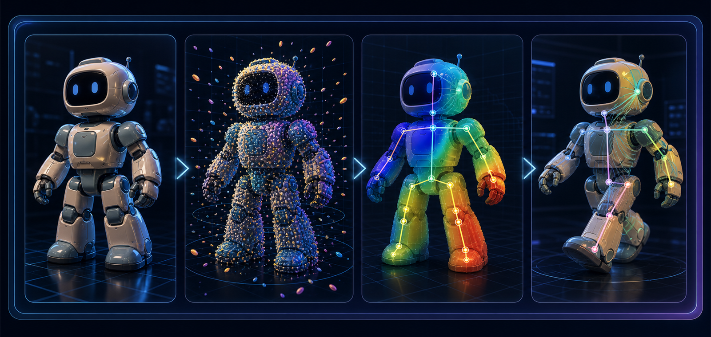
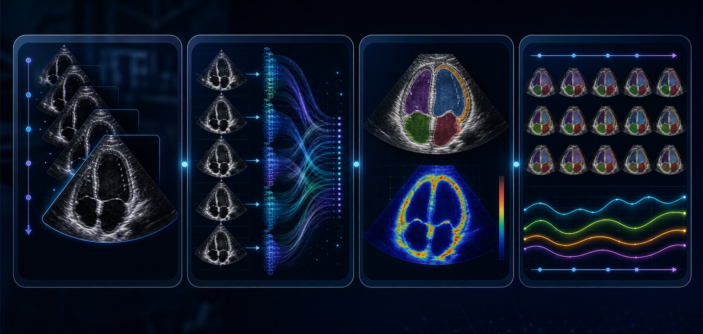
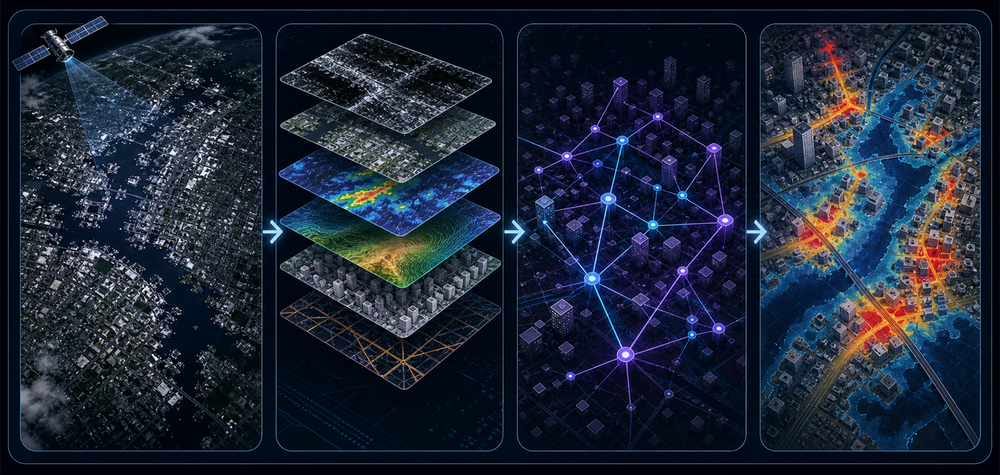

Technical curiosity and foundations
Interested in Python, AI, math, computer vision, 3D modeling, animation, medical imaging, remote sensing, or disaster-risk modeling, and willing to read papers, run experiments, and analyze failures.
These topic briefs are built around real research questions, from 3D Gaussian × Rigging to medical imaging, satellite remote sensing, and urban disaster-risk prediction. Each brief outlines the problem context, possible methods, experiment design, and a path toward conference-style research writing.
These topics usually require some background in programming, math, or visual computing, along with a willingness to read papers, reproduce experiments, and analyze failure cases. This section describes the expected background, research workflow, and output form.
Interested in Python, AI, math, computer vision, 3D modeling, animation, medical imaging, remote sensing, or disaster-risk modeling, and willing to read papers, run experiments, and analyze failures.
A baseline should be reproduced first, then visual diagnostics and experiments can be used to define a controlled improvement rather than only assembling existing tools.
If the work stops at a visual demo without code, data, error analysis, and limitations, it will be difficult to make a credible research argument.
A topic becomes mature when it supports a clear problem statement, reproducible experiments, explainable method changes, quantitative and qualitative analysis, and figures or demos for research communication.
A conference-level short paper or full paper covering problem definition, related work, method, experiments, and limitations.
A runnable code repository with environment setup, data processing, baselines, improved modules, and experiment scripts.
Visualizations, viewers, heatmaps, animation comparisons, risk maps, failure cases, and metric tables.
A demo video, poster, or slide deck for research communication and result explanation.
Representative visual results from related work on image-based reconstruction, geometry cues, automatic rigging, and motion-driven deformation.
Click any image to view it larger on this page. External images come from public research project pages and are used only as visual references; these topic explorations do not need to match these exact results. The research focus is a clear problem, a runnable baseline, a defensible improvement, rigorous experiments, and a conference-style paper.
Reconstruction determines whether the 3D asset is complete; structure understanding determines whether rigging is reliable; deformation determines whether animation is stable.

Sparse images to rigging-ready 3D Gaussian assets. This direction studies reconstruction quality, geometry diagnostics, and how sparse-view assets affect downstream rigging.

Gaussian primitives to joint, bone, and uncertainty evidence. The central questions are soft-label construction, cross-category generalization, and downstream validation for rigging.

Rigged Gaussian asset plus pose to stable animation rendering. This direction leans toward graphics and geometric modeling, with emphasis on deformation rules, artifact diagnosis, and temporal stability.
Progress is described by research maturity rather than a fixed timeline: understand the problem, reproduce baselines, define an angle, run experiments, and shape the paper narrative.
Learn the task, paper background, datasets, and real application context.
Run existing code, document setup, inputs, outputs, and failure cases.
Choose a clear angle such as stability, calibration, generalization, or artifact reduction.
Build comparisons, ablations, generalization tests, and failure analysis around a defensible hypothesis.
Prepare metrics, visual results, ablations, limitations, demo video or poster, and a conference-style paper.
Three AI for Social Impact directions
These directions examine how AI methods enter real public problems: medical imaging, wildfire risk prediction, and urban flood response under extreme rainfall.

Temporal Consistency and Uncertainty-aware Segmentation for Cardiovascular Ultrasound Videos
Research how to make ultrasound video segmentation more stable across the cardiac cycle and more reliable for EF, EDV, and ESV estimation.
Multi-source Satellite Fusion for Wildfire Detection and Spread Prediction
Fuse satellite imagery, weather, terrain, vegetation, and fuel information to jointly predict active fire, burned area, and future spread risk.

Remote Sensing and Urban Graph Fusion for Flood Risk Prediction
Combine SAR, optical imagery, DEM, rainfall, road networks, and building footprints to predict flooded areas, roads, and buildings.